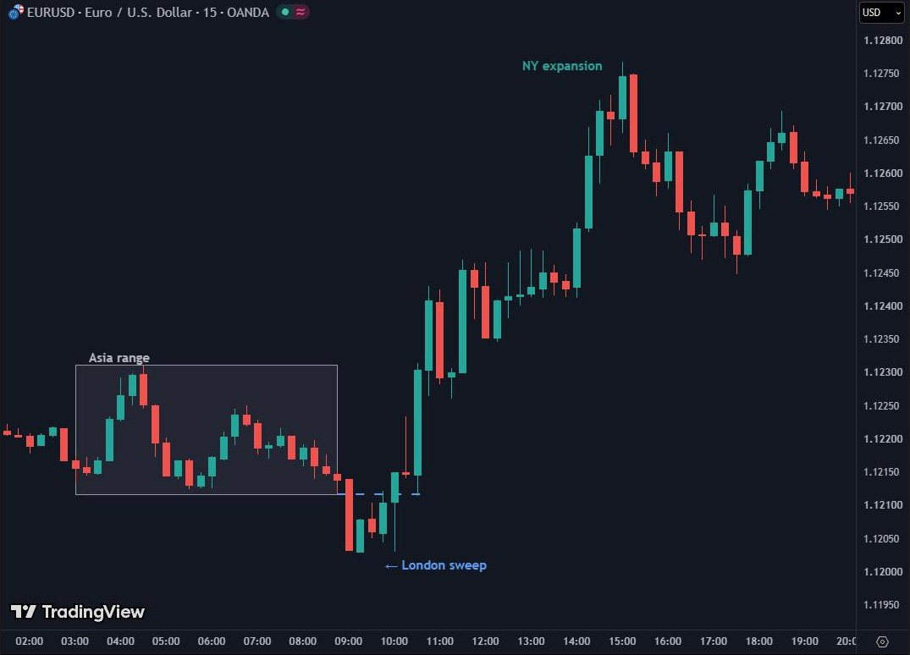

Сесии, kill zones и волатилност
Има време да си long, време да си short и време да отидеш на риболов. Джеси Ливърмор (приписвано)
След тази глава ще можеш
- да разкажеш типичния ден: Азия строи диапазона, Лондон го обира, Ню Йорк доставя движението;
- да назовеш kill zones по софийско време и да знаеш кога да не отваряш нищо ново;
- да ползваш ATR, за да прецениш колко далеч трябва да е стопът.
●9.1 Ден в три действия
Всеки търговски ден има повтарящ се ритъм, който се вижда по-ясно при валутите, отколкото където и да е другаде. Не се случва всеки ден, но се случва достатъчно често, за да е основата на дневния план.

Азия поставя сцената, Лондон пуска фалшивия сюжет, Ню Йорк казва кой е убиецът. Не излизай от киното по време на първото действие.
●9.2 Kill zones по софийско време
Kill zones са кратките прозорци, в които идват най-големият обем и най-чистите движения. Извън тях пазарът или спи, или обикаля без посока. Хубавата новина: по софийско време те са на едни и същи часове лете и зиме.
| Прозорец | София | UTC (лято) | Какво става | Действие |
|---|---|---|---|---|
| Азия | 03:00–09:00 | 00:00–06:00 | Тих диапазон и най-слабият оборот за деня. JPY двойките са изключение. | Само маркираш върха и дъното. |
| Лондон отваря | 10:00–12:00 | 07:00–09:00 | Висок обем. Често обира едната страна на Азия. | Чакай първите 15 минути; гледай за sweep и MSS. |
| Ню Йорк сутрин | 15:30–18:00 | 12:30–15:00 | Данни от САЩ в 15:30; припокриване с Лондон. Най-големите движения. | Главният прозорец, след буфера за новини. |
| Ню Йорк следобед | 18:00–20:00 | 15:00–17:00 | Затихва. Фалшиви движения, лов на стопове. | Не отваряй нови позиции. Управлявай отворените. |
През няколкото седмици през март и октомври–ноември, когато САЩ и Европа сменят часа на различни дати, нюйоркските прозорци идват един час по-рано по софийско време.
Ако в 15:30 има червена папка (CPI, NFP), нюйоркският kill zone започва след буфера: 15 до 30 минути след числото, а при NFP и решения на централни банки около час. Новината може да замени нормалния ритъм на деня.
●●9.3 Профили на двойките
Всяка двойка има свой характер. Стопът, който е разумен за EURUSD, е твърде тесен за GBPJPY, а целта, която е реалистична за златото в Ню Йорк, е мечта в Азия.
| Инструмент | Типичен дневен ATR | Най-добра сесия | Характер |
|---|---|---|---|
| EURUSD | около 50–100 пипа | Лондон + Ню Йорк | Най-ликвидна, най-ниски спредове, обратна на DXY. |
| GBPUSD | около 70–130 пипа | Лондон | По-волатилна от EURUSD; трябват по-широки стопове. |
| USDJPY | около 70–130 пипа | Токио + Ню Йорк | Нагоре при апетит за риск, надолу при страх. Риск от намеса на Япония при много слаба йена. |
| USDCHF | около 50–90 пипа | Лондон | Почти огледална на EURUSD. Франкът е safe haven (убежище). |
| XAUUSD | десетки долари; при новини много повече | Ню Йорк | Остра реакция на геополитика и реални лихви. Първи реагира при страх. |
| BTCUSD | хиляди долари | Ню Йорк | 3–5 пъти по-волатилен от валутите; често се движи заедно с Nasdaq. |
Диапазоните са ориентировъчни и се менят с годините. Преди да търгуваш нещо, провери текущия ATR(14) на D1 в TradingView.
●●9.4 ATR: колко далеч трябва да е стопът
Ако стопът ти е по-малък от обичайния шум на свещите, ще бъде ударен от случаен фитил, дори когато анализът е верен. Простото правило в тази книга: минималният стоп е половин ATR(14) на таймфрейма, на който взимаш решението, плюс буфер от няколко пипа за фитилите и спреда. Ако ATR на M5 е твърде малък, ползвай ATR на M15.
| Ситуация | Действие |
|---|---|
| Новина, движение над 2× ATR | Изчакай да се успокои; не влизай в шипа. |
| Нормална волатилност | Стандартен размер. |
| Много ниска волатилност (под 0.5× ATR) | Очаквай пробив, но чакай сигнал. |
| Азиатски диапазон | Наблюдавай, не търгувай (освен JPY). |
Тесният стоп е безопасен стоп.
Тесният стоп е чест стоп. Безопасността идва от размера на позицията (Глава 11), не от това колко близо е стопът.
●●9.5 Повторение кадър по кадър
Трите действия на деня на една графика. Часовете отдолу са по софийско време.
Тренировка
Натисни линията на графиката или бутона с буквата. Имаш един опит за всеки въпрос.
Днешният ден
Маркирай диапазона на Азия (03:00–09:00 по софийско време) и виж коя страна обра Лондон.
ЗадълбочиФиксинги и потоци в края на месеца
Всеки ден в 16:00 лондонско време (18:00 в София) фиксингът WM/Reuters определя референтните курсове, по които се оценяват трилиони във фондове и индекси. Много големи поръчки се изпълняват „на фиксинга“, в петминутен прозорец около него. В Токио има подобен фиксинг в 09:55 местно време (02:55 в София).
В последните работни дни на месеца глобалните фондове ребалансират: ако чуждите акции са поскъпнали много, те продават част и връщат парите в своята валута. Така се появяват валутни потоци, несвързани с никакви новини. Банките публикуват оценки за тези потоци в последната седмица на месеца.
За скалпъра: резки движения без новина между 17:55 и 18:05 в София, особено в края на месеца, обикновено са потоци от фиксинга. Често след това се връщат. Не ги чети като нов тренд и не дръж тесен стоп до цената в този момент.
Какво взимаш от Досие 09
- Азия строи диапазон, Лондон го обира, Ню Йорк доставя движението.
- Kill zones (София): Лондон 10:00–12:00, Ню Йорк 15:30–18:00. След 18:00 без нови позиции.
- Всяка двойка има свой характер и ATR. Провери ATR, преди да търгуваш.
- Минимален стоп ≈ 0.5 × ATR на таймфрейма плюс буфер.
- При шип над 2× ATR от новина: чакаш.
Чеклист преди следващата глава
Провери се
Лесно · 5 въпроса
Средно · 3 въпроса
Ниво Experienced Trader · 1 сценарий
Няма единствен верен отговорВторник. Азия на EURUSD: 1.0832–1.0848 (16 пипа). Дневният ATR е 70 пипа. В 10:20 Лондон пробива нагоре до 1.0855 и се връща под 1.0848. D1 е bearish (мечи). В 15:30 има продажби на дребно в САЩ (оранжева папка). Часът е 11:05.
Задача: какво се е случило в Лондон? Какво казва ATR за остатъка от деня? Кой е следващият прозорец, в който очакваш движение, и какво ще гледаш?
- Лондон обра върха на Азия (BSL над 1.0848) и се върна вътре: sweep в посоката срещу bearish D1. Класическо фалшиво първо действие.
- Изминати са около 23 пипа от 70. Остава място за около 40–50 пипа движение, вероятно надолу към SSL под 1.0832 и по-далеч.
- Ако на M5/M15 има MSS надолу след sweep-а, зоната, от която тръгва, е за наблюдение още в лондонския прозорец (до 12:00).
- Следващият прозорец е Ню Йорк след 15:30. Продажбите на дребно са средна важност: буфер около 15–30 минути, после търся продължение надолу към ликвидността под Азия.